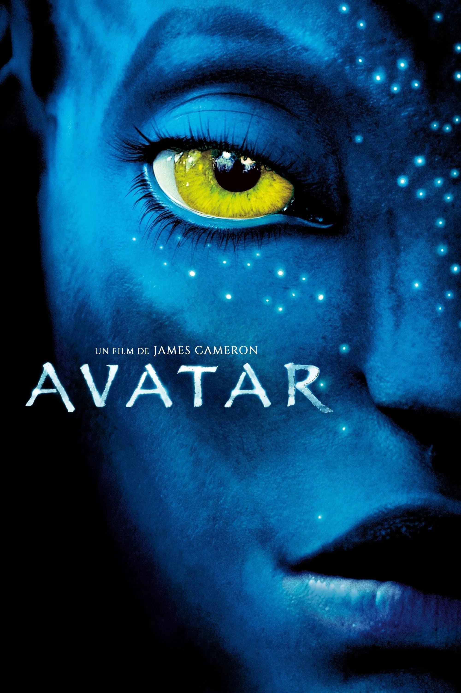

Malgré sa paralysie, Jake Sully, un ancien marine immobilisé dans un fauteuil roulant, est resté un
combattant. Il est recruté pour se rendre à des années-lumière de la Terre, sur Pandora, où un
puissant groupe industriel exploite un minerai rarissime destiné à résoudre la crise énergétique sur
Terre. Parce que l’atmosphère de Pandora est toxique pour les humains, ceux-ci ont créé le Programme
Avatar, qui permet à des « pilotes » humains de lier leur esprit à un avatar, un corps biologique
commandé à distance, capable de survivre dans cette atmosphère létale. Ces avatars sont des hybrides
créés génétiquement en croisant l’ADN humain avec celui des Na’vi, les autochtones de Pandora. Sous
sa forme d’avatar, Jake peut de nouveau marcher.

Treize longues années nous séparent de la sortie mondiale d’Avatar en 2009, le
premier volet des
aventures de Jake et Neytiri sur la planète Pandora. Autant dire une éternité. Si les héros imaginés
par James Cameron reviennent enfin dans la suite prévue en salle le 14 décembre prochain sous les
mêmes traits et dans un univers fictif qui nous est familier, le film débarquera lui dans un monde
complètement différent, qui a vu une pandémie changer les habitudes de consommation des films et
inverser le rapport de forces entre studios et plateformes de streaming. La crise sanitaire n’est
pas la seule fautive. L’équilibre des forces de l’industrie hollywoodienne avait déjà été bouleversé
dans la décennie précédente par la prise de pouvoir de la Walt Disney Company sur l’industrie du
divertissement.
En effet, depuis la sortie du premier Avatar en décembre 2009, le « multiverse » à
la sauce Marvel
s’est imposé comme le mètre étalon du blockbuster hollywoodien. Avec une trentaine de volets au
compteur à ce jour, la franchise de super-héros a occupé la place laissée vacante par des films
comme celui de Cameron, dont la suite a pris un temps anormalement long pour voir le jour.
Tractations
La naissance de la franchise Marvel et du projet Avatar s’est jouée à quelques mois
près, au centre
de tractations financières féroces et complexes qui ont vu le déjà géant Disney faire preuve d’un
appétit d’ogre. La première phase du « Marvel Cinematic Universe » (MCU) commence avec la sortie
d’Iron Man fin avril 2008, soit quasiment un an et demi avant celle d’Avatar le 18 décembre 2009.
Après des années de tractations avec différents studios, c’est la Paramount qui obtient les droits
de distribution des films Marvel en septembre 2008. Mais le rachat de Marvel Entertainment par la
Walt Disney Company fin 2009 va complètement rebattre les cartes. Marvel fait désormais partie du
vaste catalogue du Walt Disney Motion Pictures Group.
Après une décennie marquée par les succès gigantesques des différentes phases du MCU, un autre
tremblement de terre a lieu le 20 mars 2019. Un des plus anciens studios et pionnier d’Hollywood,
producteur principal d’Avatar, la 20th Century Fox, est racheté par la Walt Disney Company et
devient 20th Century Studios. Dans la foulée, le 6 août 2019, après une vague de licenciements pour
cause de postes qui font doublon, Walt Disney Studios annonce l’arrêt de la majorité des films en
développement de la 20th Century Fox à l’exception d’Avatar 2 et la saga La Planète des singes.
Entre-temps, avec le plus gros budget de l’histoire du studio qu’on appelait encore « la Fox »,
Avatar a été rentabilisé en dix jours. Il fut le cinquième film à dépasser la barre
symbolique du milliard de dollars de recettes, et le second film à atteindre les 2 milliards. Il est
devenu, après seulement six semaines d’exploitation, le plus gros succès de l’histoire du cinéma,
dépassant Titanic, également réalisé par James Cameron (et il l’est toujours, suivi de près par
Avengers : Endgame) (1). Après le succès du film, le réalisateur annonce plusieurs suites et dès
2016 déclare qu’il compte en préparer quatre et qu’elles seront tournées simultanément. Finalement,
ce sont les parties 2 et 3 qui seront tournées à partir de 2017. Et après de multiples décalages –
un premier lié au rachat de la Fox par Disney et un autre dû à la pandémie – la sortie d’Avatar: la
voie de l’eau est finalement fixée au 14 décembre 2022 en France, soit deux jours avant la sortie
américaine.
Revoir Avatar en 2022
Autre changement de taille, plus triste celui-là : le compositeur de la BO
d’Avatar, James Horner,
est décédé en juin 2015. C’est l’Anglais Simon Franglen qui prendra sa suite. Une décision qui
semble logique car ce dernier avait travaillé avec Horner en tant qu’arrangeur de musique
électronique sur la BO du premier film et avait co-écrit et co-produit la chanson titre interprétée
par Leona Lewis.
Désormais sous la coupe de Disney, la création de Cameron perdra-t-elle de son essence et
sera-t-elle diluée dans un maelstrom de bons sentiments ? On a vu les dégâts occasionnés à la saga
Star Wars par la firme de Mickey. Réponse le 14 décembre. En attendant, revenons sur l’impact du
premier volet et son héritage supposé.
Certains journalistes ont pu gloser sur le fait qu’Avatar a été oublié depuis sa sortie et qu’il n’a
pas laissé de trace durable dans l’inconscient collectif et dans la culture populaire. Cela se
discute. Le cinéaste lui-même, interrogé à ce sujet lors de la récente conférence de presse du
prochain volet, a déclaré : « On verra ça quand les gens iront voir la suite ! »
Naïveté ?
Au rayon des faiblesses, on pourrait citer un personnage quelque peu caricatural, celui du Colonel
Miles Quaritch interprété par Stephen Lang, ainsi qu’un manque de nuance dans le propos accusateur
du réalisateur, qui pourrait selon le point de vue être interprété comme une forme de naïveté. Ou
peut-être aussi comme une force. Notons que la version « édition spéciale » sortie en 2010
approfondit le personnage du colonel et montre le lien affectif qu’il a noué avec Jake. Parmi
d’autres, une scène additionnelle se déroule sur Terre au tout début du film pour étoffer le
personnage du Marine paralysé.
Outre les diverses accusations de plagiat, Avatar a prêté le flanc à sa sortie à de
nombreuses
critiques l’accusant soit de faire l’apologie du white savior narrative, soit d’être anti-américain,
ce qui n’a pas empêché le public US d’applaudir un film qui voit la défaite de leur pays (3).
Il est certain que pour rencontrer un tel succès, le film a dû toucher une corde sensible. Sa scène
de destruction massive faisait un écho direct et troublant aux attentats du 11 septembre 2001 et en
proposait une forme de catharsis. Avec son message universel – même si certains pensent qu’il est
martelé de façon grossière – ses thèmes qui résonnent encore plus fort aujourd’hui qu’en 2009, le
propos d’Avatar semble plus que jamais d’actualité, alors que le changement climatique s’accélère et
qu’une pandémie et une guerre ont déréglé notre économie néolibérale, intrinsèquement créatrice
d’inégalités et destructrice de l’écosystème.